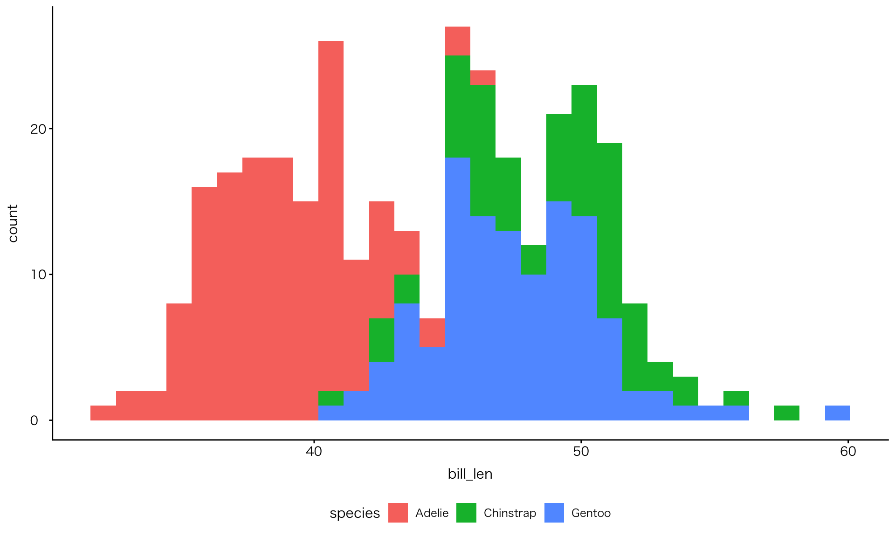
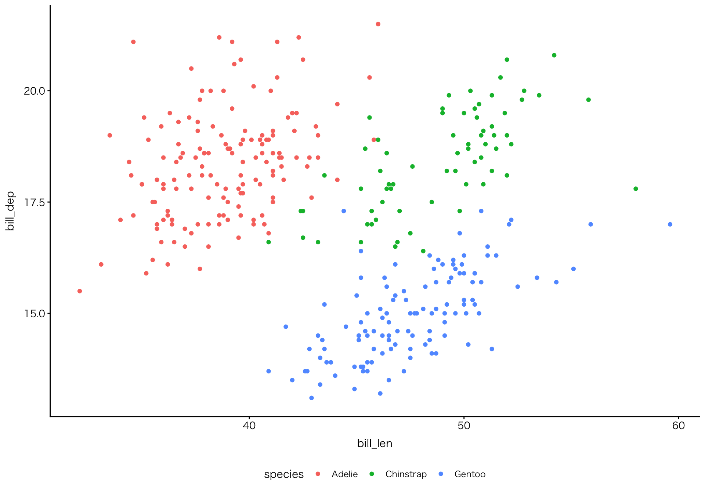

![]()
| species | max | min | mean | sd |
|---|---|---|---|---|
| Adelie | 46.0 | 32.1 | 38.82 | 2.66 |
| Chinstrap | 58.0 | 40.9 | 48.83 | 3.34 |
| Gentoo | 59.6 | 40.9 | 47.57 | 3.11 |
高校生のためのデータサイエンス入門
データ分析のためのプログラミング言語R
October 28, 2025
0. この講義で学べること
この講義で学べること
- データサイエンスとは何か
- Rの何がよいのか、Rで何ができるか
この講義で学べないこと
- Rのコード習得（簡単な案内のみ）
Ⅰ. データサイエンスとは何か {
いま、なぜデータサイエンスなのか
- 社会の要請：
- エビデンスベースの思考、政策提案・政策決定
- ビッグデータの利活用：
- 蓄積されたデータという鉱脈
- 個々のデータを結合させ、ビッグデータとする
- 個々のデータは既知でも、結合させることによって新たしいデータ分析が可能に（Rが得意なこと）
- 例：健康に関するデータと学習成績に関するデータ
データ分析の目的
- データの要約
- データの意味、データ間の関係の探索
- 既知のデータから未知の知見の探究（予測）
データ分析の目的 ＞ データの要約
- 膨大なデータと限られた人間の能力
- データの要約が必要
要約の手法
- 代表値によるデータの集約：例）最小値；最大値；平均値
- ばらつきの指標の計算による分布の推定：例）分散；標準偏差
- データの可視化：例）箱ひげ図；ヒストグラム

データ分析の目的 ＞ データの意味、データ間の関係の探索
- 複数のデータを比較し、その関係を探索する
データ分析の手法
- 関係の数値化：例）共分散；相関係数
- データの可視化・図表：例）散布図・クロス集計表
相関係数
| species | cor_bill |
|---|---|
| Adelie | 0.386 |
| Chinstrap | 0.654 |
| Gentoo | 0.654 |
散布図

データ分析の手順
flowchart LR
A["Import / Load<br>データの読み込み"] -->
B["Wrangle<br>データ整形・変換"] -->
C["Explore<br>データの探索・可視化"] -->
D["Model<br>モデルの構築・分析"] -->
E["Communicate<br>結果の伝達"]
%% ノードのスタイル（色と中央寄せ）
style A fill:#FFA500,stroke:#333,stroke-width:1px,text-align:center
style B fill:#FFD700,stroke:#333,stroke-width:1px,text-align:center
style C fill:#87CEFA,stroke:#333,stroke-width:1px,text-align:center
style D fill:#90EE90,stroke:#333,stroke-width:1px,text-align:center
style E fill:#FFB6C1,stroke:#333,stroke-width:1px,text-align:center
Ⅱ. 「情報」の高大接続
「情報」の高大接続
- 高校教育：
- 第三者が作った図を正確に読み取る力が求められる
- 高等教育：
- 既知のデータから新たな図を作り、新しい解釈を下す力が求められる（Rが得意なこと）
- データを新たに収集し、新たな図を作り、新しい解釈を下す力が求められる
学習指導要領
イ（ウ） データの収集，整理，分析及び結果の表現の方法を適切に選択し，実行し，評価し改善することでは，データを問題の発見・解決に活用するために，必要なデータの収集について，選択，判断する力，それに応じて適切なデータの整理や変換の方法を判断する力，分析の目的に応じた方法を選択，処理する力，その結果について多面的な可視化を行うことにより，データに含まれる傾向を見いだす力を養う。 また，データの傾向に関して評価するために，客観的な指標を基に判断する力，生徒自身の考えを基にした適正な解釈を行う力を養う。 更に，地域や学校の実態及び生徒の状況に応じて，数学科と連携し，データを収集する前に，分析の構想を練り紐付ける項目を洗い出したり，外れ値の扱いについて確認したり，データの傾向について評価するために仮説検定の考え方などを取り扱ったりすることも考えられる。
- 表計算アプリでできなくはないが、総じて、高校生に過剰な能力を求めている
学習指導要領
例えば，データの型式に関しては，表形式以外の時系列データ，SNS などにおいて個人と個人の繋つながりを表現するためのデータ，項目（キー）と値（バリュー）をセットにして値を格納するキー・バリュー形式のデータを扱うことが考えられる。
- Rのようなプログラム言語を習得しなければ困難
学習指導要領
また，気象データ，総務省統計局のデータ及び国や地方公共団体などが提供しているオープンデータなどについて扱い，データ収集の偏りについても考え，それらのデータを表計算ソフトウェアや統計ソフトウェアで扱うことができるように整理，加工し，適切な分析や分かりやすい可視化の方法について話し合い，これらを選択して実施し，その結果に関する生徒個々人の解釈をグループで協議し，評価する学習活動などが考えられる。
- 多くのオープンデータは人間にとって見やすい形（表）で提供されており、コンピュータには理解できない。カラムと値で構成されたデータフレームである必要がある。表からデータフレームへの変換・加工もRが得意なこと）の一つ
学習指導要領
更に，テキストマイニングの学習として，新聞記事や小説などをテキストデータとして読み込み，適当な整形等を行った上で，単語の出現頻度について調べさせ，出現頻度に応じた文字の大きさで単語を一覧表示したタグクラウドを作らせ，単語の重要度や他の単語との関係性を捉える学習活動などが考えられる。英語と日本語では，テキストマイニングをする際にどのような部分に違いがあるのかについて討論したり，実際にテキストマイニングを行って比較したりする活動なども考えられる。
- Rのようなプログラム言語を習得しなければ困難
Ⅲ. なぜRなのか
なぜRなのか
- Cf. Microsoft Excel / SPSS / python
- 無料
- ITベンダーから自由に（予算；分析；可視化）
- コード
- 再現可能性
- マウス操作と違い､手順を説明する必要性が少ない（真似しやすい）
- 操作を忘れてもコードが残る
- ミスも再現できる
- 使い回せる
- 反復性（作業の効率化）
- 図を使ったコミュニケーションや分析自体に時間を使える
- 安全性（元データは加工しない）
- ➡ 初期コストはすぐに回収できる
- 再現可能性
なぜRなのか
- 豊富な可視化ツール
- ggplot2(公式サイト)
- カラーパッケージ
- 豊富な出力パッケージ（quarto）
- Documents
- Presentations
- Dashboards
- Website
- このウェブサイトもQuartoの出力パッケージを使って作成
- ➡ YAML（ファイル冒頭部分）を変えるだけ
- この他､各図表を個別に出力可能（pngファイル；csvファイル）
なぜRなのか
- 親切なコミュニティ
- 各専門分野の研究者が､当該分野の分析に最適化したパッケージを作っている
- 困っていることはみんな一緒（先達の回答が参考になる）
- 簡易的な記述法
- markdown
Ⅳ. Rの実例
Rでできること
- 作図
- 5 Named Graphs(5NG)：棒グラフ；ヒストグラム；箱ひげ図；散布図；折れ線グラフなど
- データ解析
- 因子分析や回帰分析など
- スクレイピング
- ウェブサイトなどからデータを一括取得
- テキスト分析
- テキストを量的に解析（質的ではなく）
- 地図情報
Rの実例
作図
作図：金沢広域急病センター利用者数
作図：金沢広域急病センター利用者数
Code
df_hospital_long |>
filter(!if_any(everything(), is.na)) |>
arrange(日付) |>
group_by(専門) |>
mutate(移動平均 = rollmean(利用者数, k = 90, fill = NA, align = "right")) |>
ggplot(aes(x = 日付, y = 移動平均, color = 専門, group = 専門)) +
geom_line() +
scale_x_date(
date_breaks = "3 months",
labels = label_date_short()
) +
scale_color_paletteer_d("awtools::mpalette")作図：金沢広域急病センター利用者数
Code
# 矩形のデータフレームを作成
rects <- data.frame(
xmin = as.Date("2020-04-16"),
xmax = as.Date("2021-09-30"),
ymin = -Inf,
ymax = Inf,
label = "緊急事態宣言" # 凡例に表示するラベル
)
df_hospital_long |>
filter(!if_any(everything(), is.na)) |>
arrange(日付) |>
group_by(専門) |>
mutate(移動平均 = rollmean(利用者数, k = 90, fill = NA, align = "right")) |>
ggplot(aes(x = 日付, y = 移動平均, color = 専門, group = 専門)) +
geom_line() +
geom_rect(data = rects, aes(xmin = xmin, xmax = xmax, ymin = ymin, ymax = ymax, fill = label), alpha = 0.1,inherit.aes = FALSE) +
scale_fill_manual(values = "red", name = "") +
scale_x_date(
date_breaks = "3 months",
labels = label_date_short()
) +
scale_color_paletteer_d("awtools::mpalette")作図：野生鳥獣の放射線モニタリング調査結果
Code
基準値 <- data.frame(yintercept = 100, Lines = '基準値')
df_野生鳥獣 |>
filter(!is.na(セシウム)) |>
group_by(動物) |>
ungroup() |>
mutate(検査月日 = as.POSIXct(検査月日),
検査月日 = as.Date(検査月日)) |>
ggplot(aes(x = 検査月日, y = セシウム, colour = 動物, group = 動物)) +
geom_boxplot() +
geom_jitter() +
geom_hline(aes(yintercept = yintercept, linetype = "基準値"), color = "red", data = 基準値) +
scale_y_continuous(labels = comma) +
labs(color = "動物", linetype = "") +
scale_x_date(
date_breaks = "6 months",
labels = label_date_short()
) +
scale_color_paletteer_d("awtools::mpalette")作図：野生鳥獣の放射線モニタリング調査結果
Code
df_野生鳥獣 |>
filter(動物 == "イノシシ") |>
filter(!is.na(セシウム)) |>
group_by(方部, 西暦) |>
ggplot(aes(x = "", y = セシウム, colour = 方部, group = 方部)) +
geom_boxplot() +
geom_jitter() +
geom_hline(aes(yintercept = yintercept, linetype = "基準値"), color = "red", data = 基準値) +
scale_linetype_manual(name = "", values = c("基準値" = "dashed")) +
scale_y_continuous(labels = comma) +
labs(x = "") +
scale_color_paletteer_d("awtools::mpalette") +
facet_wrap(~ 西暦)作図：野生鳥獣の放射線モニタリング調査結果：イノシシ
Code
df_野生鳥獣 |>
filter(動物 == "イノシシ") |>
filter(!is.na(セシウム)) |>
group_by(方部, 西暦) |>
ggplot(aes(x = factor(西暦), y = セシウム, color = 動物)) +
geom_boxplot() +
geom_jitter() +
geom_hline(aes(yintercept = yintercept, linetype = "基準値"), color = "red", data = 基準値) +
scale_linetype_manual(name = "", values = c("基準値" = "dashed")) +
scale_y_continuous(labels = comma) +
theme(legend.position = "bottom") +
labs(x = "検査年") +
scale_color_paletteer_d("awtools::mpalette") +
scale_x_discrete(breaks = seq(2010, 2024, by = 2)) +
facet_wrap(~ 方部)作図：野生鳥獣の放射線モニタリング調査結果：「相双」のイノシシ
方部「相双」
Code
df_野生鳥獣 |>
filter(動物 == "イノシシ") |>
filter(!is.na(セシウム)) |>
filter(方部 == "相双") |>
group_by(方部, 西暦) |>
ggplot(aes(x = factor(西暦), y = セシウム, colour = 動物)) +
geom_boxplot() +
geom_jitter() +
geom_hline(aes(yintercept = yintercept, linetype = "基準値"), color = "red", data = 基準値) +
scale_linetype_manual(name = "", values = c("基準値" = "dashed")) +
scale_x_discrete(breaks = seq(2010, 2024, by = 2)) +
scale_y_continuous(labels = comma) +
theme(legend.position = "bottom") +
scale_color_paletteer_d("awtools::mpalette") +
labs(x = "検査年") 作図：OECD景気先行指数 Composite Leading Indicators (CLI)
Code
url <- "https://sdmx.oecd.org/public/rest/data/OECD.SDD.STES,DSD_STES@DF_CLI/.M.LI...AA...H?startPeriod=2023-02&dimensionAtObservation=AllDimensions&format=csvfilewithlabels"
df_oecd_cli <- read_csv(url)
df_oecd_cli <-
df_oecd_cli |> # 整形：必要な列を取り出す
select(REF_AREA, TIME_PERIOD, OBS_VALUE) |>
mutate(TIME_PERIOD = as.Date(paste0(TIME_PERIOD, "-01"))) |>
mutate(TIME_PERIOD = as.Date(TIME_PERIOD))
countries <- c("JPN", "USA", "DEU", "FRA", "KOR") #主要国だけ選ぶ
df_sub <-
df_oecd_cli |>
filter(REF_AREA %in% countries)
df_sub |>
ggplot(aes(x = TIME_PERIOD, y = OBS_VALUE, color = REF_AREA)) +
geom_line() +
scale_x_date(
breaks = scales::breaks_width("3 months"),
labels = scales::label_date_short()
) +
scale_y_continuous(
"Composite Leading Indicator (CLI)", # y軸ラベル
breaks = scales::breaks_extended(8), # 目盛りの個数を指定
labels = scales::label_number(accuracy = 1) # 数値表示（小数なし）
) +
labs(
x = "Year", y = "CLI",
color = "Country"
) +
scale_color_paletteer_d("awtools::mpalette") +
theme(axis.text.x = element_text(angle = 45, hjust = 1))スクレイピング
スクレイピング：首相の発言集
Code
# 対象年度ページのURLリスト
years <- 2021:2024
base_url <- "https://www.kantei.go.jp/jp/101_kishida/statement"
urls <- paste0(base_url, "/", years, "/index.html")
# 各年度ページからタイトルとリンクを抽出
get_titles_and_urls <- function(url) {
resp <- request(url) |> req_perform()
html <- resp_body_html(resp)
html_elements(html, "div.news-list-title a") |>
map_dfr(~{
title <- html_text2(.x)
link <- html_attr(.x, "href")
full_url <- ifelse(startsWith(link, "http"), link, paste0("https://www.kantei.go.jp", link))
tibble(title = title, url = full_url)
})
}
# 各個別ページから日付を抽出
get_date_from_page <- function(url) {
tryCatch({
resp <- request(url) |> req_perform()
html <- resp_body_html(resp)
date_node <- html_elements(html, "span") |>
keep(~ str_detect(html_text2(.x), "更新日："))
if (length(date_node) > 0) {
html_text2(date_node[[1]]) |>
str_remove("^更新日：") |>
str_trim()
} else {
NA_character_
}
}, error = function(e) NA_character_)
}
# 各年度ページからリンクを抽出して結合
results <- map_dfr(urls, get_titles_and_urls)
# 各URLごとに日付を取得
results <- results |>
mutate(date = map_chr(url, get_date_from_page)) |>
select(title, date, url)
results <-
results |>
mutate(
.before = url,
year_part = stringr::str_extract(date, "^.{2,3}\\d+年"),
md_part = stringr::str_remove(date, "^.{2,3}\\d+年"),
年 = convert_jyear(year_part)
) |>
select(!year_part) |>
relocate(年, .before = md_part) |>
rename(日付 = md_part) |>
mutate(
年月日 = paste0(年, 日付),
date_gregorian = as.Date(年月日, format = "%Y%m月%d日")
) |>
select(!年月日) |>
rename(年月日 = date_gregorian) |>
arrange(desc(年月日)) |>
relocate(年月日, .before = 年) |>
select(title, 年月日, url) |>
rename(date = 年月日)
results |>
gt() |>
text_transform(
locations = cells_body(columns = c(url)), # ←ここを修正
fn = function(x) {
map(x, ~ html(paste0("<a href='", .x, "' target='_blank'>", .x, "</a>")))
}
)テキスト分析：岸田首相の発言
ネットワーク分析
Code
key <-
textstat_keyness(speech_dfm)
feat <-
head(key$feature, 20)
speech_fcm <-
dfm_select(speech_dfm, feat) |>
fcm()
size <-
sqrt(rowSums(speech_fcm))
#textplot_network(speech_fcm, min_freq = 0.85, edge_alpha = 0.9,
# vertex_size = size / max(size) * 3)
# fcm オブジェクトを行列に変換
fcm_mat <- as.matrix(speech_fcm)
# igraph オブジェクトに変換（重み付きの無向グラフ）
g <- graph_from_adjacency_matrix(fcm_mat, mode = "undirected", weighted = TRUE, diag = FALSE)
# ノードのサイズ（出現頻度など）も確認済みなら：
V(g)$size <- sqrt(rowSums(fcm_mat)) # もしくは size ベクトル
# ネットワーク図を描画
ggraph(g, layout = "fr") +
geom_edge_link(aes(edge_alpha = weight), show.legend = FALSE) +
geom_node_point(aes(size = size),
color = "steelblue",
alpha = 0.8) +
geom_node_text(aes(label = name), repel = TRUE, family = "HiraKakuProN-W3", size = 3) +
theme(legend.position = "bottom",
text = element_text(family = "HiraKakuProN-W3")) テキスト分析：岸田首相の発言
感情分析
Code
result <-
dfm_lookup(speech_dfm, dictionary = dict)
df_result <-
convert(result, to = "data.frame")
df_long <-
df_result |>
pivot_longer(cols = -doc_id, names_to = "sentiment", values_to = "count")
df_long |>
ggplot(aes(x = doc_id, y = count, fill = sentiment)) +
geom_col(position = "dodge") +
theme(
legend.position = "bottom",
axis.text.x = element_text(angle = 45, hjust = 1)
) +
labs(title = "感情語の出現数（文書ごと）", x = "文書", y = "単語数")- 出典：「日本語評価極性辞書」Tohoku NLP GroupURL
max_pos_noun
max_pos_verb
max_neg_noun
max_neg_verb
テキスト分析：岸田首相の発言
政治辞書
地図情報
地図情報
Code
us_state_elec |>
ggplot(aes(x = long, y = lat, group = group, fill = party)) +
geom_polygon(color = "gray90", size = 0.1) +
coord_map(projection = "albers", lat0 = 39, lat1 = 45) +
scale_fill_manual(values = party_colors) +
labs(title = "アメリカ大統領選挙結果 2016", fill = NULL) +
theme_map(base_family = "HiraKakuProN-W3")- コードの出典：ヒーリー，キーラン (2021)
アメリカの人口密度
Code
county_full <-
county_map |>
left_join(county_data, by = "id")
county_full |>
ggplot(aes(x = long, y = lat,
fill = pop_dens,
group = group)) +
geom_polygon(color = "gray90", size = 0.05) +
coord_equal() +
scale_fill_brewer(palette = "Blues",
labels = c("0-10", "10-50", "50-100", "100-500", "500-1,000", "1,000-5,000", ">5,000")) +
labs(fill = "Population per\nsquare mile") +
theme_map() +
guides(fill = guide_legend(nrow = 1)) +
theme(legend.position = "bottom")- コードの出典：ヒーリー，キーラン (2021)
Ⅴ. Rを動かしてみよう
Rの手順
flowchart TB
Start([YAML設定（ドキュメントの設定）:<br> タイトル、出力形式、テーマなど]) --> B[データの読み込み・前処理:<br> dplyr / tidyr
<br>（フィルタリング / 集計・要約 / 新列作成・計算<br>/ 縦持ち・横持ち変換 / 欠損値処理）]
B --> C1[データの探索・可視化:<br> skim, gt_summary / ggplot2]
B --> C2[統計分析・モデル構築:<br> lm, glm, 因果推論]
C1 --> D[結果の評価・解釈:<br> broom, modelsummary, performance]
C2 --> D
D --> End([レポート作成（レンダリング）:<br> knitr / rmarkdown<br>（pdf; reveal.js; webpage; docx; pptx; pdf）])
%% 色付け
style Start fill:#a2d4f1,stroke:#333,stroke-width:2px
style End fill:#f1d4a2,stroke:#333,stroke-width:2px
style C1 fill:#d4f1a2,stroke:#333,stroke-width:1px
style C2 fill:#f1a2d4,stroke:#333,stroke-width:1px
Rの手順
flowchart TB
Start([YAML設定・パッケージ読み込み]) --> B[データの読み込み・前処理]
B --> C1[データの探索・可視化: ggplot2 / gt_summary]
B --> C2[統計分析・モデル構築: lm, glm]
C1 --> D[結果の評価・解釈: broom]
C2 --> D
D --> End([レポート作成（レンダリング）])
Rの構造
graph BT
A(["<strong>Base R</strong>
Rの基本構文・関数
例: mean(), sum(), if"]) -->
B(["<strong>Modern R</strong>
便利な文法・スタイル
例: |> パイプ, tibble, dplyr 文法,<br> ggplot2 文法"]) -->
C(["<strong>Packages</strong>
Rに追加するツール集
例: tidyverse, ggplot2,<br>readr, lubridate, shiny"])
%% ノードのスタイル
style A text-align:center
style B text-align:center
style A text-align:center, fill:#FFD700,stroke:#333,stroke-width:1px,font-weight:bold;
style B text-align:center, fill:#87CEFA,stroke:#333,stroke-width:1px,font-weight:bold;
style C text-align:center, fill:#90EE90,stroke:#333,stroke-width:1px,font-weight:bold;
- Packages
- 目的別に追加するツール：家具や家電
- Modern R：tidyな（整然とした）R
- 近年の改良で、より読みやすく・便利になった文法：家の「骨組み・壁・柱」や「設計の考え方」
- Base R
- R言語そのもの：家の基礎部分
- tidyverse は家具も文法も含むが、文法部分は Modern R、インストールして使う部分は Packages に分類できる
準備：インストール
1. R：本体
- ブラウザからRにアクセス
- 手持ちのPCに適したファイルをダウンロードして、実行
- Windows / macOS / Linux
Chromebookにインストールすることは簡単ではないので、お勧めしません
準備：インストール
2. R Studio：統合開発環境
- ブラウザからR Studioにアクセス
- 手持ちのPCに適したファイルをダウンロード、実行
- Windows / macOS / Ubuntu
準備：ファイルの作成
3. OSで、この授業用のフォルダ作成
ファイル名は念のため英数のみとして下さい
4. R Studioで操作:
- File > New Project > Existing Directory > 3で作成した フォルダを指定 > Create Project
5. R Studioで操作:
- File > Quarto Document > Create
- 以下のチェックを外す
- Title:
- HTML
- Editor: Use visual markdown editor
準備：ファイルの作成
5. R Studioで操作:
- 5で作成したquartoファイルを保存
ファイル名は念のため英数のみとして下さい
動かしてみよう：palmer penguins
- palmer penguinsは、R 4.5から組み込まれたデータセットの一つです
- これは、パッケージを追加したり、データを読み込む必要がないことを意味します
- 従来のデータセットとは違い、カラム名、naなどの点で、教育的配慮のあるデータセット
動かしてみよう：palmer penguins
- このデータセットは、Allison Horstさんが南極のパーマーランドの三つの島に住むペンギンたちのデータです
- ペンギンの種類：
- Adelie（Adélie、アデリーペンギン）
- Gentoo（ジェンツーペンギン）
- Chinstrap（ヒゲペンギン）
- 島の名前：
- Biscoe（ビスコー）
- Dream（ドリーム）
- Torgersen（トージャーセン）
動かしてみよう：palmer penguins
ペンギン
| skim_type | skim_variable | island | n_missing | complete_rate | factor.ordered | factor.n_unique | factor.top_counts | numeric.mean | numeric.sd | numeric.p0 | numeric.p25 | numeric.p50 | numeric.p75 | numeric.p100 | numeric.hist |
|---|---|---|---|---|---|---|---|---|---|---|---|---|---|---|---|
| factor | species | Biscoe | 0 | 1.0000000 | FALSE | 2 | Gen: 124, Ade: 44, Chi: 0 | NA | NA | NA | NA | NA | NA | NA | NA |
| factor | species | Dream | 0 | 1.0000000 | FALSE | 2 | Chi: 68, Ade: 56, Gen: 0 | NA | NA | NA | NA | NA | NA | NA | NA |
| factor | species | Torgersen | 0 | 1.0000000 | FALSE | 1 | Ade: 52, Chi: 0, Gen: 0 | NA | NA | NA | NA | NA | NA | NA | NA |
| factor | sex | Biscoe | 5 | 0.9702381 | FALSE | 2 | mal: 83, fem: 80 | NA | NA | NA | NA | NA | NA | NA | NA |
| factor | sex | Dream | 1 | 0.9919355 | FALSE | 2 | mal: 62, fem: 61 | NA | NA | NA | NA | NA | NA | NA | NA |
| factor | sex | Torgersen | 5 | 0.9038462 | FALSE | 2 | fem: 24, mal: 23 | NA | NA | NA | NA | NA | NA | NA | NA |
| numeric | bill_len | Biscoe | 1 | 0.9940476 | NA | NA | NA | 45.25749 | 4.7727314 | 34.5 | 42.00 | 45.80 | 48.70 | 59.6 | ▂▅▇▃▁ |
| numeric | bill_len | Dream | 0 | 1.0000000 | NA | NA | NA | 44.16774 | 5.9535266 | 32.1 | 39.15 | 44.65 | 49.85 | 58.0 | ▅▇▆▇▁ |
| numeric | bill_len | Torgersen | 1 | 0.9807692 | NA | NA | NA | 38.95098 | 3.0253180 | 33.5 | 36.65 | 38.90 | 41.10 | 46.0 | ▅▆▇▆▂ |
| numeric | bill_dep | Biscoe | 1 | 0.9940476 | NA | NA | NA | 15.87485 | 1.8207214 | 13.1 | 14.50 | 15.50 | 17.00 | 21.1 | ▇▇▃▃▁ |
| numeric | bill_dep | Dream | 0 | 1.0000000 | NA | NA | NA | 18.34435 | 1.1331159 | 15.5 | 17.50 | 18.40 | 19.00 | 21.2 | ▁▃▇▅▁ |
| numeric | bill_dep | Torgersen | 1 | 0.9807692 | NA | NA | NA | 18.42941 | 1.3394468 | 15.9 | 17.35 | 18.40 | 19.25 | 21.5 | ▃▇▆▃▃ |
| numeric | flipper_len | Biscoe | 1 | 0.9940476 | NA | NA | NA | 209.70659 | 14.1422683 | 172.0 | 199.50 | 214.00 | 220.00 | 231.0 | ▁▃▁▇▅ |
| numeric | flipper_len | Dream | 0 | 1.0000000 | NA | NA | NA | 193.07258 | 7.5073659 | 178.0 | 187.75 | 193.00 | 198.00 | 212.0 | ▃▇▇▅▂ |
| numeric | flipper_len | Torgersen | 1 | 0.9807692 | NA | NA | NA | 191.19608 | 6.2322375 | 176.0 | 187.00 | 191.00 | 195.00 | 210.0 | ▂▅▇▃▁ |
| numeric | body_mass | Biscoe | 1 | 0.9940476 | NA | NA | NA | 4716.01796 | 782.8557429 | 2850.0 | 4200.00 | 4775.00 | 5325.00 | 6300.0 | ▂▅▇▇▃ |
| numeric | body_mass | Dream | 0 | 1.0000000 | NA | NA | NA | 3712.90323 | 416.6441116 | 2700.0 | 3400.00 | 3687.50 | 3956.25 | 4800.0 | ▂▆▇▃▂ |
| numeric | body_mass | Torgersen | 1 | 0.9807692 | NA | NA | NA | 3706.37255 | 445.1079402 | 2900.0 | 3337.50 | 3700.00 | 4000.00 | 4700.0 | ▅▇▇▅▂ |
| numeric | year | Biscoe | 0 | 1.0000000 | NA | NA | NA | 2008.09524 | 0.7833453 | 2007.0 | 2007.00 | 2008.00 | 2009.00 | 2009.0 | ▆▁▇▁▇ |
| numeric | year | Dream | 0 | 1.0000000 | NA | NA | NA | 2007.98387 | 0.8552456 | 2007.0 | 2007.00 | 2008.00 | 2009.00 | 2009.0 | ▇▁▆▁▇ |
| numeric | year | Torgersen | 0 | 1.0000000 | NA | NA | NA | 2007.92308 | 0.8365699 | 2007.0 | 2007.00 | 2008.00 | 2009.00 | 2009.0 | ▇▁▆▁▆ |
動かしてみよう：palmer penguins
- このデータセットは、Allison Horstさんが南極のパーマーランドの三つの島に住むペンギンたちのデータです
ペンギンの種類：
- Adelie（アデリーペンギン）
- Gentoo（ジェンツーペンギン）
- Chinstrap（ヒゲペンギン）
島の名前：
- Biscoe（ビスコー）
- Dream（ドリーム）
- Torgersen（トージャーセン）
動かしてみよう：palmer penguins
- R chunkを作る
- RはR Chunk内でのみ動作します
- R Chunk以外の領域はYAMLもしくはmarkdown
R Studioで操作:
- Code > Insert Chunk
動かしてみよう：palmer penguins
データを確認しよう
- R chunkに以下のコードを書く
# パッケージの読み込み ---- #「# ○○-----」と書いておくと、Outlineに表示されてみやすい
library(tidyverse) #「モダンなデータ分析」を行うためのパッケージ群
library(gt) # 表パッケージ
penguins |> # penguinsのデータセットを使用
filter(species == "Adelie" & island == "Biscoe") |> # Biscoe島にいるAdelieペンギンを抽出
slice(1:5) |> # 表示用に最初の5行だけ取り出す
gt() # 表形式で表示| species | island | bill_len | bill_dep | flipper_len | body_mass | sex | year |
|---|---|---|---|---|---|---|---|
| Adelie | Biscoe | 37.8 | 18.3 | 174 | 3400 | female | 2007 |
| Adelie | Biscoe | 37.7 | 18.7 | 180 | 3600 | male | 2007 |
| Adelie | Biscoe | 35.9 | 19.2 | 189 | 3800 | female | 2007 |
| Adelie | Biscoe | 38.2 | 18.1 | 185 | 3950 | male | 2007 |
| Adelie | Biscoe | 38.8 | 17.2 | 180 | 3800 | male | 2007 |
動かしてみよう：palmer penguins
図を作ってみよう

test
penguins |>
ggplot(aes(x = species, y = body_mass, fill = species)) +
stat_summary(fun = mean, geom = "bar") +
labs(
x = "種類",
y = "体重 (g)"
)
Ⅵ. 基本的な流れと用語
1. 基本的な流れ：dplyrとggplot
flowchart TB
A([データの加工 <br> <strong>dplyr</strong> <br> 例 select filter]) --- B([データの可視化 <br> <strong>ggplot2</strong> <br> 例 geom_bar])


aa
Tips | 代入演算子（<-）のショートカット
- チャンク内で
- Win: Alt + 「-」キー
- Mac: Option + 「-」キー
4. 整然データと雑然データ
⑴ 整然（tidy）データ
- 各変数は独立した列で表現される
- 観測した値は1行に記録される
- 観測データの集合はテーブルを表現する
（ヒーリー，キーラン (2021), 「付録A.1.3「Tidyデータ」329-332ページ）
Ⅶ データの入手先（お勧め）
1. ckan（シーカン）
引用文献
引用文献
- 瓜生真也「データ分析入門」https://github.com/uribo/tokupon_ds
- 文部科学省「高等学校学習指導要領（平成30年告示）解説 情報編」https://www.mext.go.jp/content/1407073_11_1_2.pdf
ヒーリー，キーラン, 2021. データ分析のためのデータ可視化入門, 瓜生真也・江口哲史・三村喬生 訳. 講談社.